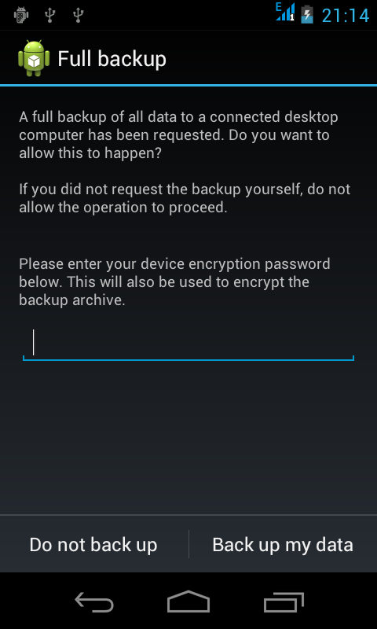
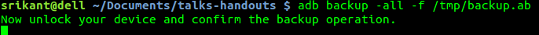
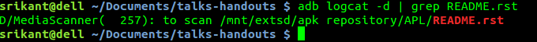

Any piece of software or hardware ever designed must have gone through debug a process. Debug provides us a window to sneak into a running application.
Android provides an excellent platform for debugging apk through eclipse IDE.
However there is more of debugging for advanced users, which is quite useful and fast.
If you have installed and setup android development enviroment for eclipse, then you have all the debugging tools with you.
If not, you can install adb on Ubuntu-12.10 onwards by
sudo apt-get install android-tools-adb
or you can download the entire Android-sdk(400 MB uncompressed) here and setup manually.
or for a 32bit Linux machine, you may download it from this link and make the binary as executable
chmod +x adb
Set udev rules for android usb in /etc/udev/rules.d/51-android.rules, open terminal and do
sudo gedit /etc/udev/rules.d/51-android.rules
and enter these two rules
SUBSYSTEM=="usb", ATTR{idVendor}=="19d2", MODE="0666", GROUP="plugdev"
SUBSYSTEM=="usb", ATTR{idVendor}=="18d1", MODE="0666", GROUP="plugdev"
save and exit. Now restart udev services by
sudo service udev restart
That’s all, now enjoy debugging in eclipse or through adb without the need of root access.
If your project demands a WiFi based debugging then follow this approach. First ensure that both your host machine and android device are in same WiFi network.
Connect android(Aakash), and host-machine through USB cable. Wait for debugging icon on android side, when ready issue
adb tcpip 5555
You will get confirmation message as restarting in TCP mode port: 5555 on the terminal emulator. Now remove your USB cable, and issue
adb connect <your-android-device-ip>
If success, it will print connected on your terminal.
Now you can debug your android through adb or test apk’s through eclipse debugging wirelessly.
When done, it’s better to disconnect gracefully
adb disconnect <your-android-device-ip>
adb stands for android debug bridge. It’s a client command line tool which lets you communicate with an emulator instance or connected Android device.
These are most frequently used adb commands. Let’s try them.
Assuming the device is connected to host-machine
adb push README.rst /mnt/sdcard
This will copy README.rst to /mnt/sdcard, internal sdcard of Aakash tablet.
Let’s try copying from device to our host-machine
adb pull /mnt/sdcard/README.rst /tmp
This will copy README.rst to /tmp directory.
Let’s try pushing a directory to android
adb push data /mnt/sdcard/data
This will copy the content of data directory to data directory in sdcard.
Similarly you can try pulling this directory to /tmp
adb pull /mnt/sdcard/data /tmp/data
These are useful tools. Option -all will backup all apps
adb backup -all -f /tmp/backup.ab
Now unlock your android device, and select “Backup up my data”. You can optionally set a password too.
After confirming operation on android device, your terminal emulator will change to
The backup operation sadly doesn’t have any progress bar, it take time depending on number of apps installed.
Similarly, to restore one can do
adb restore /tmp/backup.ab
This will again ask for confirmation on android side, select “Restore my data” to start restore process. Again no progress bar.
Note
backup and restore doesn’t work with Aakash device. There are many other tools freely available for same purpose.
This is again a most frequently used command. One can use “adb shell” to execute any shell command inside android environment
adb shell <command>
We will see more of “adb shell” later.
This will simply show live log of all processes running on device. The -d flag will dump the output to stdout and exit. Let’s try this out
adb logcat -d | grep README.rst
grep will search for ‘README.rst’ in logcat output.
Try searching other terms in logcat for effective debugging or you can run logcat to view live status of your android device.
(pm) tool perform actions and queries on application packages installed on the device. Syntax to use
adb shell pm <command>
Let’s try few command to retrieve package information
adb shell pm list packages
If you want to uninstall any package, simply issue
adb shell pm uninstall com.aakash.lab
To set install location for apk’s, internal or external sdcard
adb shell pm set-install-location 1
0: Auto—Let system decide the best location
1: internal device storage
2: external media
To get current install location
adb shell pm get-install-location
Within an adb shell, one can issue commands with the activity manager (am) tool to perform various system actions, such as start an activity, force-stop a process etc.
Let’s checkout few examples
adb shell am start -a android.intent.action.VIEW
This will open “Complete action using” menu.
Similarly, if one want to kill all background apps, then issue
adb shell am kill-all
To test various screen resolutions for your application
adb shell am display-size 320x240
Remember, you can not test your app in resolution higher than actual screen resolution.
For eg: on Aakash the native screen resolution is 800x480 so one can’t test apps for 1280x800.
Warning
This option(display-size) may crash your display, you then may have to factory reset your device. Works with phone, crashes sometimes with Aakash. So use it wisely. You have been warned.
By the way, to do factory reset, goto settings -> Backup and reset -> Factory data reset and confirm. This will remove all the apps.
For various reasons you may want your certain script to start automatically when device boots. This can be achieved by carefully observing init.rc file.
In case of aakash, to run a bash script at boot time we need to put the entry of the bash script in /system/bin/preinstall.sh, this file get called at boot time and anything inside it will be executed.
Explore init.rc and preinstall.sh only if you know what you are doing. Any wrong entry in /system/bin/preinstall.sh may kill your device.
Warning
Again, you have been warned.
With adb , one can easily script, for eg:
To monitor RAM usage of Android device every 1 sec, one can write a simple shell script and execute
1 2 3 4 5 6 7 | #!/bin/sh
while true
do
adb shell busybox free -m
sleep 1
done
|
The above script can be done in one line too, in terminal emulator
while true; do adb shell busybox free -m ; sleep 1; done
To cancel the loop, just use ^C .
Let’s try another script. This time let’s try installing all the apks present in present working directory
for each in $(ls *.apk); do adb install -r $each; done
These are very trivial examples, there are lot of exciting things possible with scripts.
BusyBox provides several stripped-down Unix tools in a single executable file (less than 1 MB). It is used in almost every embedded Linux device.
Inside adb shell (i.e in android device) it can be accessed as
busybox
This will print list of commands possible with busybox. Busybox can also be accessed from terminal as
adb shell busybox
To access any command use
adb shell busybox <command-name> <command's-flag>
We will see few important examples with busybox
Listing all files
busybox ls -l
Changing file permissions
adb shell busybox chmod 755 /mnt/sdcard
For opening a file for editing, it’s better to do adb shell first and then:
busybox vi /mnt/sdcard/README.rst
Use i or press <INSERT> key to go to editing mode.
To save, press <ESC> key to exit from editing mode. Then use :wq to write and quit.
If you have edited a file but want to discard changes, press <ESC> to exit from editing mode, and then use :q! to quit without saving.
To know system load
adb shell busybox top
To find out partition table
adb shell busybox df -h
To find out disk usage of any file
adb shell busybox du -sh
To know list of mounted devices
adb shell mount
In most of the android devices /system is marked as ro, only when you get root access to your device you can make changes there. But it make sense to mark system partition as ro unless required. To change our mount options to ro
adb shell busybox mount -o rw,remount /system
This we use at our Aakash logistics facility, to obtain MAC address from a new device automatically we use this approach in a Python script:
adb shell svc wifi enable
then
adb shell ip link show wlan0 | busybox awk '/ether/ {print $2}'
finally disable wifi, if not required
adb shell svc wifi disable
Monitor is a gui tool to monitor packages, apps, threads, processes etc. One can use it to capture screenshot too.
{kind=link}